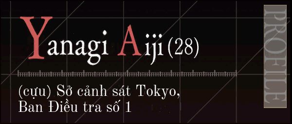
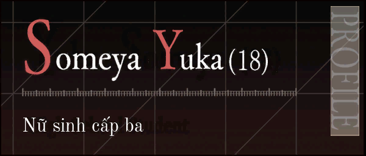
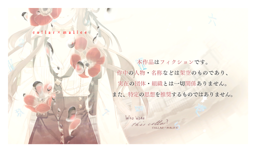
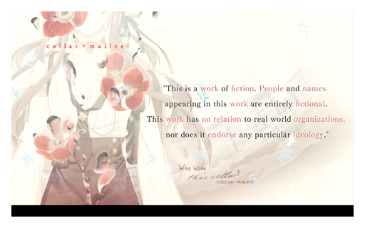
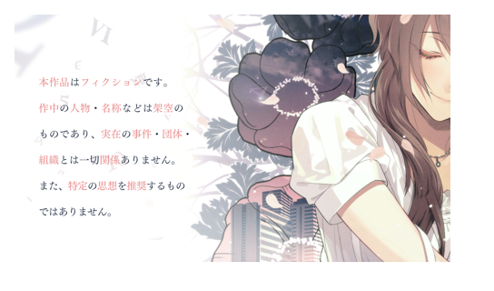
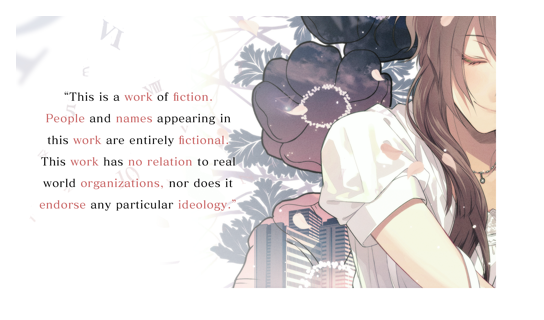
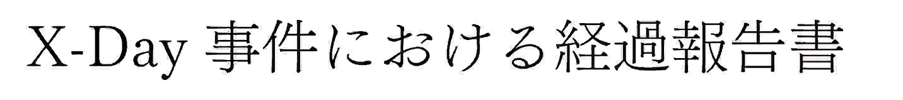
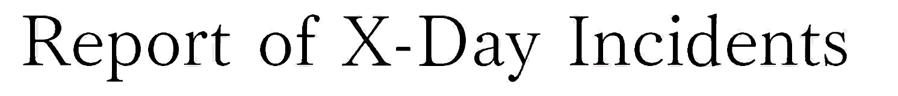
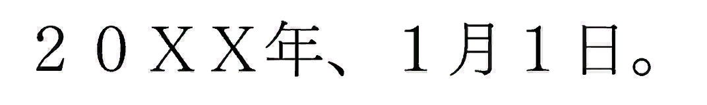
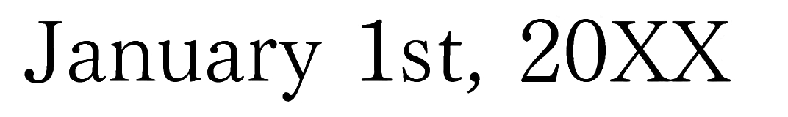

Collar×Malice · Switch, bản Nhật
Những thay đổi so với bản Việt hoá 2021
Bản này làm tiếp trên PatchVietHoa 2021, cho cả game chính và Collar×Malice -Unlimited- (title 01002B400E9DA000). Lời thoại trong kịch bản vẫn là bản dịch năm đó. Phần dưới là những gì người chơi nhìn thấy khác đi.
00Những gì được giữ
font_Normal và font_Mail trở lại đúng byte năm 2021. Một thử nghiệm dùng khoảng cách chữ của bản Anh đã được bỏ, vì chữ đọc không đều.Đổi kịch bản sang Latin Extended-B làm màn CG sự kiện đen và khoá hết mục Voice Recorder, kể cả sau khi sửa con trỏ. Vì vậy mọi chữ mới vẽ bằng font 2021 đều đi qua bảng mã cũ.
01Khoảng cách chữ
Đã xem trong game · 30/10/2026
Bản 2021
Danh sách Load/Save đọc thành Lự a chọ n: mỗi chữ có dấu bước một ô cố định, rộng khoảng 66 đơn vị, trong khi nét chữ chỉ rộng 24–42. Đổi độ rộng trong font không hết, vì đoạn vẽ danh sách save không dùng advance của chữ nhiều byte. Chữ ASCII thì bước theo advance, nên tiếng Nhật và tiếng Anh của game gốc không lộ lỗi này.
Bản này
Mọi dòng ngang bước theo độ rộng từng chữ, rồi trừ 12 đơn vị — đúng cách màn Từ điển của bản 2021 vốn đã đọc khít và đều. Danh sách chương, Options, thanh trợ giúp, banner giữa màn, cửa sổ thoại và danh sách save đều theo bước đó. Cả hai đĩa dùng một routine cho danh sách save.
Ô save trống, trước ghi 新しいセーブデータ, nay ghi Dữ liệu mới.
Chữ Nhật full-width vẫn cách nhau: glyph 72 đơn vị, nét khoảng 59, bước còn 60.
02Khung thoại đổi màu theo người nói
Màu khung lấy từ tên người nói, đối chiếu với bảng tên nhân vật. Không khớp thì khung là màu trung tính.
Bản 2021
Bảng gốc ghi mỗi nhân vật chính ba cách, toàn tiếng Nhật. Bản dịch đặt mọi người nói bằng tiếng Anh, họ đứng trước, nên không hàng nào khớp. Khung thoại của cả hai đĩa luôn trung tính.
Bản này
Sáu hàng đầu của cả hai bảng được ghi đúng chuỗi kịch bản đang dùng — Yanagi Aiji, Hoshino #Name[1], … — và giữ nguyên mã màu. Tên game đọc nằm ở khối chữ phía sau mã lệnh, không phải chuỗi cũ còn sót trong lệnh.
| Đĩa | Tên khớp màu |
|---|---|
| Game chính | 24.748 / 32.098 |
| -Unlimited- | 1.638 / 1.993 |
Phần còn lại là nhân vật phụ, tên gọi tắt và câu hai người nói chung (A & B). Bản Nhật cũng để những trường hợp đó ở khung trung tính.
03Phụ đề
Bản Nhật không vẽ phụ đề. Bản Anh có, và bản này mang chúng sang executable Nhật.
Voice Recorder, game chính
Chưa xem trong game
25 ảnh phụ đề — năm nhân vật chính, mỗi người năm câu — được vẽ lại bằng tiếng Việt, bản dịch của Yui. Khung là panel của bản Anh; chữ là font_Normal của game, bước trừ 12 đơn vị như mọi dòng khác. Câu trả lời dài gấp khoảng ba lần tiếng Anh, nên co từ cỡ 0,40 xuống cho vừa khung, tối đa 12 dòng.
Năm tiêu đề câu hỏi trên atlas, bản 2021 vẽ bằng font hệ thống, nay dựng từ chính chữ của atlas tiếng Anh:
| Tiếng Anh | Tiếng Việt |
|---|---|
| Basic info | Lý lịch trích ngang |
| Hobbies/Skills | Sở thích/Kỹ năng |
| Likes | Những thứ anh thích |
| Dislikes | Những thứ anh ghét |
| Your type of woman | Mẫu phụ nữ anh thích |
Voice Recorder và màn Extra, -Unlimited-
Đã xem trong game · 31/10/2026
- 83 phụ đề Voice Recorder, nguyên câu tiếng Anh của bản USA. Mỗi dòng một ảnh, tra theo mã voice. Xếp theo vị trí bảng sẽ đặt câu trả lời của Kotoho dưới câu hỏi của Mochida, vì 33 nhân vật phụ đứng khác thứ tự database.
- 225 câu nhân vật trên màn Extra. Hộp thoại hiện khi câu đang phát.
- Khi câu trả lời dài, giữ nút sẽ cuộn chữ.
Atlas Voice Recorder của -Unlimited- nằm trong GAME_02, file bản 2021 không sửa. Cột tên và số lấy từ bản Anh; năm nhân vật chính ghi bằng họ, cùng chỗ và cùng cỡ với tên riêng của bản Anh. Mười ba tiêu đề câu hỏi vẽ bằng mặt chữ đậm của chính atlas đó:
Điều anh thích ở cô ấy · Điều muốn cô ấy thay đổi · Điều muốn làm cùng cô ấy · Về gia đình · Về các mối quan hệ · Mùa và nơi yêu thích · Điều luôn để tâm · Điều thầm bận tâm · Điều giữ bí mật · Đôi lời gửi cô ấy · Tự giới thiệu · Thứ yêu thích & không thể nhường · Đôi lời gửi nữ chính.
04Từ điển
Hai mục game chính bị bản 2021 viết tắt cho vừa số byte của tên Nhật, nay viết đủ bằng những từ file đã có sẵn:
| Bản 2021 | Nay | |
|---|---|---|
| 12 | Giết ng quá gi.hạn phòng vệ | Giết người quá giới hạn phòng vệ |
| 37 | Ban p.chống t.phạm cn cao | Ban phòng chống tội phạm công nghệ cao |
| 27 | Bộ trưởng | Tổng thanh tra |
Mục 27 là 警視総監, chức của Takaeda. Từ điển -Unlimited-, bảng tên 415 và các dòng kịch bản đều gọi là Tổng thanh tra. Mục game chính trước đó ghi Bộ trưởng.
Hai tên viết đủ dài hơn cột danh sách (804 và 1.009 đơn vị; mục rộng nhất còn lại là 753). Danh sách cắt mỗi dòng ở cuối thanh đỏ và cho dòng đang chọn chạy ngang. Tiêu đề trang chi tiết tránh nhãn dọc “Dictionary”.
Ba dòng mô tả vốn đã tràn khung từ năm 2021 được ngắt thêm bằng #n. Cùng khoảng cách chữ mới, độ rộng của chúng vẫn như hồi 2021, nên ngắt dòng là cách xử lý, không phải nới khung.
05BGM, danh sách phim, ending
Game chính
Tiêu đề BGM, Movie và Ending List được dựng lại từ chính các chữ cái bản Mỹ đã vẽ cho hai danh sách đầu. Dấu tiếng Việt là phần chênh giữa chữ có dấu và chữ không dấu của Old Standard, đặt lên nét Anh cho khớp độ đậm. Khoảng cách học từ lề chữ của các dòng Anh.
Ending List của bản Mỹ dùng một mặt chữ khác, đậm hơn. Ở đây cả ba danh sách cùng một mặt chữ của BGM và Movie, rồi Ending List được thu về chiều cao nắp chữ của chính nó. Nhãn cố định — ÷ [Division], HAPPY END, dấu hỏi, chữ số, phần cuộn — lấy lại nguyên từ ảnh Nhật.
Ending Ngón tay lạnh lẽo & Lời của ác quỷ trước rộng 1.056 px và đè lên ÷ [Division]. Nhãn được trả về đúng chỗ; tiêu đề siết tối đa 2 px mỗi chữ rồi thu cỡ cho mực dừng ở mép cột trái.
-Unlimited-
Toàn bộ nằm trong GAME_02. Bản 2021 không sửa archive này, nên các màn phụ còn tiếng Nhật.
- BGM. Mười một bài trùng game chính dùng lại tên Việt. Hai bài mới: Hai nhịp tim và Tình yêu vô hình.
- Movie. Sáu tiêu đề trùng game chính, cùng nhãn CATEGORY chép từ bản Anh.
- Tab route và nút OK / Trở về chép từ ảnh Việt đã có trong GAME_01, vì atlas cùng bố cục.
- Con dấu đỏ 調査完了 trên ảnh chọn nhân vật thành Đã điều tra. Viền dấu giữ nguyên; chỉ lòng dấu được viết lại, đúng góc của từng ảnh.
06Kịch bản
Khớp từng byte với file đang cài · 1/11/2026
Sửa trong khối chữ. Chuỗi mới vừa khung cũ, phần dư đệm bằng số 0, nên không có con trỏ nào dịch chuyển. Bảng mã 2021 giữ nguyên. Thứ tự: sửa từng dòng, rồi ngoặc kép, rồi gạch đầu câu.
- Dòng còn tiếng Anh. Route Shiraishi,
507.DAT: “Shiraishi peered through the window near the door.” thành “Shiraishi-san ngó qua ô cửa sổ nhỏ cạnh cửa.” Cả bản trong mục chữ game đọc và bản sót trong lệnh đều được đổi. - Chức của Takaeda. 警視総監. Bản 2021 ghi Cục trưởng ở game chính (46 dòng) và bộ trưởng ở -Unlimited- chương 252. Các dòng đó nay là Tổng thanh tra. Chỗ khung chữ không đủ dài thì bỏ một từ đệm (ngài, lại, đấy) thay vì tràn khối.
- Ngoặc kép. Bản 2021 dùng một dấu cho cả hai đầu, thường là ”, chỗ thì “. Font vẽ hai dấu khác nhau, nên trên màn hình cả hai đầu đều đóng hoặc đều mở. Trong 36.489 dấu ở khối chữ, khoảng 15.700 dấu đứng sai phía và được đặt lại theo chữ bên cạnh. Thẻ màu bị bỏ qua khi xét. Dấu mở và dấu đóng cùng ba byte, nên chỉ đúng các byte đó đổi.
- Gạch đầu hộp thoại. Tiếng Nhật mở nhiều câu bằng ――. Bản dịch giữ thành -, --, — hoặc ―― trước chữ đầu tiên, đọc như một dấu lạc. Dòng đầu mỗi hộp bỏ gạch đó cùng khoảng trắng theo sau. Dòng tiếp trong cùng hộp vẫn giữ. Giữ lại các dòng không có chữ sau gạch, dòng “—san đang chờ đấy.” (gạch đứng thay một cái tên), và kịch bản Nhật chưa dịch ở các file 9xx của STORY_02.
07Bảng tên lúc nhân vật xuất hiện lần đầu
Chưa xem trong game · OCR đọc đúng chức danh trên cả 55 ảnh
Effect 401–425 có trên cả hai đĩa, 426–434 chỉ có ở -Unlimited-. Ảnh Nhật và ảnh Anh khác nhau ở texture: tên Anh để tên riêng trước, chữ cái đầu đỏ, phần còn lại trắng; dòng chức danh là chữ serif nhỏ.
Bản này xếp họ trước, đúng cách kịch bản 2021 gọi người nói: Yanagi Aiji, Sanjou, Souda, Kenzou, Yuusaku. Mỗi từ thường được cắt nguyên khối từ chính bảng tên Anh của nhân vật đó, rồi gắn chữ cái đầu đỏ của ô nó chuyển tới. Tuổi giữ theo từng đĩa — Mikuni Rei ghi 26 ở đĩa 1 và 24 ở đĩa 2. Vì tuổi và một số tấm chỉ có một đĩa, tổng cộng 55 ảnh.
Dòng chức danh dùng từ của bản mod, lấy từ kịch bản và từ điển 2021:
| Tiếng Nhật | Trên bảng tên |
|---|---|
| 警視庁 | Sở cảnh sát Tokyo |
| 新宿署 | Đồn Shinjuku |
| 捜査一課 | Ban Điều tra số 1 |
| 鑑識課 | Ban giám định |
| 科学捜査研究所 | Phòng nghiên cứu tội phạm |
| 特殊地域防犯対策室 | Đặc nhiệm Phòng chống Tội phạm khu vực |
| 警視総監 | Tổng thanh tra |
| 依頼人 | Người ủy thác |
Tấm 428, tiếng Nhật là 会社員, bản Anh ghi “Corporate Executive”. Bản này dùng chữ mod đã dùng cho 会社員 ở các tấm khác: Nhân viên văn phòng. Mực tên và chức danh dừng trước dải PROFILE.
Hai tấm dưới đây là ví dụ. Đủ 55 tấm nằm ở plates.html.

(cựu) Sở cảnh sát Tokyo, Ban Điều tra số 1

Nữ sinh cấp ba
08Thẻ ngày giờ đầu chương
Tấm trượt vào lúc mở chương — tiếng Nhật dạng 04月 10日 PM01:05 — là effect 310_現在時刻. Bản Anh vẽ MONTH 04 / DAY 10 / TIME 01:05PM. Các ô tháng, ngày, sáng/chiều, giờ và phút vẫn bị xếp theo toạ độ Nhật, nên gắn ảnh Anh mà không dịch ô thì đọc thành PM0:1 05.
Bản này thêm đúng đoạn dịch ô của bản Anh, và thay texture: game chính lấy ảnh Anh nén lại DXT5, -Unlimited- lấy nguyên file Anh (cùng các đối tượng, header Nhật).
-Unlimited-, chương 1 route Yanagi · đã xem 1/11/2026
Thẻ của game chính chưa xem. Ảnh đồng hồ bad end và route Shiraishi chưa đụng tới.
09Phim mở đầu câu chuyện
Chữ tiếng Nhật được đốt vào hình, không nằm trong kịch bản.
- Game chính.
prologue.usm, phim báo cáo diễn biến vụ X-Day ở đầu chương 0, thay bằng bản Anh. Cùng dòng VP9, cùng 1.350 khung. Audio Anh ngắn hơn 10 ms. Mod trước không kèm MOVIE_01; nay có. Đoạn gõ chữ trên nền trắng ngay sau phim là effect riêng, ở mục dưới. Op và ed01–ed05 vẫn tiếng Nhật. - -Unlimited-.
pro01.usmđếnpro06.usm, phim mở chương đầu của từng route, thay bằng bản Anh. Cùng số khung và cùng số mẫu audio. Op và ed01–ed06 vẫn tiếng Nhật.
Prologue chưa xem trong game
10Dòng chữ đầu game và báo cáo gõ chữ
Chưa xem trong game
Game mới hiện dòng “tác phẩm hư cấu”, rồi ở game chính là phim prologue, rồi một bản báo cáo được gõ ra trên nền trắng. Bản 2021 để cả dòng chữ và bản báo cáo bằng tiếng Nhật. Chúng là ảnh, không phải chữ trong kịch bản.
Bản 2021
Dòng “tác phẩm hư cấu” là nền ADV/BG/1, mỗi đĩa một ảnh Nhật. Phần ghi công tiếng Việt của bản 2021 nằm ở ảnh khác, SYSTEM/FICTION, và vẫn giữ nguyên.
Sau prologue, effect 100 gõ X-Day 事件における経過報告書, 40 nhịp phím. Effect 111–117 là bảy bản báo cáo cùng kiểu, gõ tiếp trong prologue.
Bản này
Nền của cả hai đĩa đổi sang ảnh Anh. Effect 100 gõ Report of X-Day Incidents, 22 nhịp. Effect 111–117 đổi theo, từ Report for April, May đến January 1st, 20XX.
Mỗi nhịp phím của bản Anh phát cue 0 trong typing_SE.acb. Trong file Nhật, cue đó là cả đoạn gõ dài 7 giây (effect 100) hoặc tiếng cọ (111–117), và bản Nhật chỉ phát một lần. Gắn ảnh Anh mà không sửa tiếng thì mỗi chữ bật lại cả đoạn dài, chồng lên chữ trước. Cue 0 nay là một tiếng gõ: lấy đúng nốt gõ phím trong ngân hàng âm thanh và cắt còn bốn khung đầu.
Đĩa 1


-Unlimited-


Bản báo cáo, nhịp cuối




Đây là texture của effect, cắt phần có chữ. Chưa phải ảnh chụp trong game.
11Dấu câu trên giao diện hệ thống
Trong database SYSTEM của bản 2021, một số chuỗi được viết cho font Nhật đều ô. Font Việt tỉ lệ làm chúng đọc sai.
| Bản 2021 | Nay |
|---|---|
| Tháng 4 năm 20XX.Những ngày... | Tháng 4 năm 20XX. Những ngày... |
| 00.Điều tra Saeki | 00. Điều tra Saeki |
| Saeki１ | Saeki 1 |
| Kiểm tra phòng／Yanagi | Kiểm tra phòng/Yanagi |
| Tựa đề ：%s | Tựa đề: %s |
| “Cặp Đôi Súp Miso“ | mở và đóng đúng phía |
Giữ nguyên tên file (gk402.DAT, /op.usm), cp.1, dấu ba chấm, dấu chấm ngay trước ngắt dòng, chuỗi Nhật (#n９月, ＯＮ／ＯＦＦ) và dấu hai chấm Nhật trong chữ Nhật.
12Save từ bản Anh
File save từng ô, SaveDataXXXXXX.sav, cùng định dạng giữa bản Nhật và bản Anh, mang sang được. SystemData0000.sav thì không: bản Nhật gom hai đĩa trong một file, bản Anh tách hai title. Chép một file Anh sẽ khoá Extra của đĩa kia và đặt cờ -Unlimited- sai chỗ — 365 cờ của đĩa 2 bắt đầu ở chỉ số 76 trong file Nhật, ở chỉ số 6 trong file Anh.
Có công cụ ghép hai file hệ thống tiếng Anh thành một file Nhật. Đây là đường cho người chuyển save, không đổi chữ trên màn hình.
13Đã xem trong game
| Hạng mục | Trạng thái |
|---|---|
| Cách vẽ và bước chữ | 30/10/2026 |
| Phụ đề Voice Recorder và câu Extra của -Unlimited- | 31/10/2026 |
| Thẻ ngày giờ -Unlimited-, chương 1 route Yanagi | 1/11/2026 |
| Ba bước sửa kịch bản, khớp byte file đang cài | 1/11/2026 |
| 25 phụ đề Voice Recorder tiếng Việt của game chính | Chưa xem |
| Thẻ ngày giờ của game chính | Chưa xem |
| Prologue tiếng Anh | Chưa xem |
| Dòng “tác phẩm hư cấu” và báo cáo gõ chữ | Chưa xem |
| Bảng tên nhân vật | Chưa xem. OCR đọc đúng chức danh |
Ảnh minh hoạ chỉ có khi mở trang trên máy đã dựng mod. Bản trên mạng không kèm những file đó.